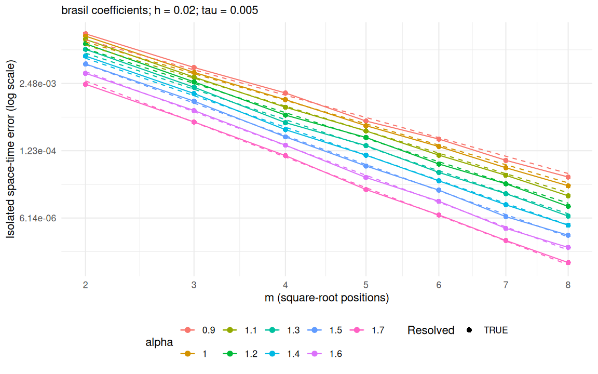

Isolated rational convergence in m
Experiments · Theory and functions
Knit loads the saved results and redraws the plots. The heavy
computation chunk has eval=FALSE and runs only when you
execute it manually. Run the chunks from top to bottom, including the
recompute chunk, before knitting this K=16 version. Its result files are
separate from the earlier single-mode results. Keep the parameters
consistent with the errors you load.
# Initialize the R engine before purl() for interactive sessions.
knitr::opts_chunk$set(engine="R")
knitr::purl("brasilfunc.Rmd", output="brasilfunc.R", quiet=TRUE)## [1] "brasilfunc.R"source("brasilfunc.R")
source("initial_modes_tadpole.R")knitr::opts_chunk$set(message=FALSE, warning=FALSE, error=FALSE, cache=FALSE)library(ggplot2)Problem and common matrix discretization
The smooth data on the length-\((1,2)\) tadpole are \[
u_t+\nu L^\beta u=f(t),\qquad
u_0=\frac{a_0}{\sqrt K}\sum_{j\in\mathcal J_K}e_j,\qquad f(t)=a_f
A\sin(\omega t)e_7,
\qquad \beta=\alpha/2,\quad L=\kappa^2-\Delta_\Gamma.
\] Here \(K=16\) and \(\mathcal J_K=\{5,6,8,\ldots,21\}\),
excluding the forced mode \(7\). The
normalization preserves \(\|u_0\|_{L_2}=|a_0|\). The amplitudes and
frequency are initial_amplitude,
forcing_amplitude, AAA, and
OMEGA. These finite eigenfunction sums have arbitrarily
high spectral spatial regularity. This study measures the error
introduced by rational approximation on a fixed FEM mesh and time
grid.
Let \(\psi_i\) be the P1 hats and define \[ \mathbf C_{ij}=(\psi_j,\psi_i)_{L_2(\Gamma)},\qquad \mathbf G_{ij}=(\psi_j',\psi_i')_{L_2(\Gamma)},\qquad \mathbf L=\kappa^2\mathbf C+\mathbf G, \qquad\mathbf B=\mathbf C^{-1}\mathbf L. \] Writing \((\boldsymbol\ell_j)_i=(e_j,\psi_i)_{L_2(\Gamma)}\), both evolutions start from the same \(L_2\) projection and use the same load: \[ \mathbf C\mathbf U^0=\frac{a_0}{\sqrt K}\sum_{j\in\mathcal J_K}\boldsymbol\ell_j,\qquad \mathbf F^{k+1}=a_f\overline g_{k+1}\boldsymbol\ell_7, \qquad \overline g_{k+1}=\frac1\tau\int_{t_k}^{t_{k+1}}A\sin(\omega t)\,dt. \] The sine–hat integrals are analytic. For \(\omega\ne0\), \(\overline g_{k+1}=A[\cos(\omega t_k)-\cos(\omega t_{k+1})]/(\omega\tau)\); the code evaluates its stable midpoint-sinc form, including \(\omega=0\). Thus projection, assembly, and forcing treatment are shared across all orders and both reference and rational solutions.
Error computation
Step 1: Build the exact-discrete backward Euler reference
The complete generalized eigensystem satisfies \[ \mathbf L\mathbf V=\mathbf C\mathbf V\boldsymbol\Lambda, \qquad\mathbf V^\top\mathbf C\mathbf V=\mathbf I, \qquad\boldsymbol\Lambda=\operatorname{diag}(\lambda_{j,h}). \] All \(N_h\) numerical eigenvectors are retained. This diagonalizes the FEM operator, up to eigensolver and arithmetic errors. It is not a truncation to the active continuum eigenfunctions: their projections can excite additional discrete modes.
Backward Euler for the discrete fractional operator is \[
\mathbf U_h^{k+1}=\mathbf V
\operatorname{diag}\left((1+\tau\nu\lambda_{j,h}^\beta)^{-1}\right)
\mathbf V^\top(\mathbf C\mathbf U_h^k+\tau\mathbf F^{k+1}).
\] This reference has no rational approximation. It still
includes the common FEM and backward Euler discretizations, which makes
it the appropriate reference for isolating the rational error.
isolated_discrete_spectrum() checks the eigen-equation
residuals and mass orthogonality. Dense eigendecomposition is restricted
to moderate meshes by allocation guards.
Step 2: Compute the rational evolution by shifted sparse solves
Scale the discrete operator by \(\kappa^2\) and write \[ x_j=\frac{\kappa^2}{\lambda_{j,h}}\in J_h=[\delta_h,1],\qquad \delta_h=\frac{\kappa^2}{\lambda_{\max,h}}. \] The smallest eigenvalue is \(\kappa^2\), so the upper endpoint is one. A type-\((m,m)\) rational function \(r_m\) approximates \(x^\beta\) on \([0,1]\). For the shifted-solve implementation, set \[ S_m(y)=r_m(y^{-1})=d_m+\sum_{j=1}^m\frac{\rho_j}{y-\eta_j}, \qquad H_m(y)=\frac{S_m(y)}{S_m(y)+s},\qquad s=\tau\nu\kappa^{2\beta}. \] The BRASIL source poles \(\eta_j<0\), residues \(\rho_j>0\), and constant \(d_m\ge0\) determine the time-step partial fractions \[ H_m(y)=r_\tau+\sum_{n=1}^m\frac{a_n}{y-z_n}, \qquad r_\tau=\frac{d_m}{d_m+s}. \] The time-step poles \(z_n\) and residues \(a_n\) belong to \(H_m\), and are recomputed from the source coefficients for the chosen \(\tau\). The actual matrix evolution is \[ \mathbf U_{h,m}^{k+1} =\left[r_\tau\mathbf C^{-1} +\sum_{n=1}^m a_n(\mathbf L/\kappa^2-z_n\mathbf C)^{-1}\right] (\mathbf C\mathbf U_{h,m}^k+\tau\mathbf F^{k+1}). \] It retains the constant-term mass solve and reuses Cholesky factors. The numerical eigenbasis supplies the independent reference and diagnostics; it does not replace these sparse rational solves.
Step 3: Measure the isolated space–time error
The difference of two FEM functions with coefficient difference \(\mathbf d_k=\mathbf U_h^k-\mathbf U_{h,m}^k\) has squared spatial norm \(\mathbf d_k^\top\mathbf C\mathbf d_k\). Both reconstructions are constant on \((t_{k-1},t_k]\), so their time integral is exact: \[ E_m=\|U_h^\tau-U_{h,m}^\tau\|_{L_2(0,T;L_2(\Gamma))},\qquad E_m^2=\tau\sum_{k=1}^N\mathbf d_k^\top\mathbf C\mathbf d_k. \] No reference mesh or reference-time quadrature is needed for this norm. Both trajectories use the same projected initial value, load, mesh, and time step. Their difference isolates the rational change to the discrete propagator. It is not the total continuum error \(\|u-U_{h,m}^\tau\|\), and it has no continuum spatial or temporal error floor in exact arithmetic.
Step 4: Check whether the measured rational error is resolved
The helper also propagates the rational scalar multipliers in the
complete numerical eigenbasis and computes product_error.
Mass orthonormality makes that modal difference norm equal to the sparse
matrix norm in exact arithmetic. Their discrepancy and the final
mass-norm state gap check the sparse evolution independently.
At \(\alpha=2\), \(x^\beta=x\) is exact, and both paths reduce
to ordinary backward Euler. Its measured control error therefore
indicates numerical disagreement. The code defines, for each fractional
case, \[
\eta_{m,\alpha}=\max\left\{
|E_m-E_{\rm product}|,\ E_{\alpha=2,\rm control},\ d_{\min}\right\},
\] where \(d_{\min}\) is
.Machine$double.xmin, the smallest positive normalized
floating-point number. A case is marked resolved when \(E_{\rm product}>100\eta_{m,\alpha}\).
Open markers fail that empirical criterion. The all-order regression
keeps finite positive measured errors; the resolved-only regression uses
only the marked resolved cases. This indicator is an implemented
diagnostic, rather than a rigorous roundoff error certificate.
Convergence behavior in m
Step 5: Obtain the root-exponential approximation scale
For \(0<\beta<1\), best uniform type-\((m,m)\) rational approximation to \(x^\beta\) on \([0,1]\) satisfies \[ \delta_m=\sup_{x\in[0,1]}|x^\beta-r_m(x)| \le C_\beta e^{-2\pi\sqrt{\beta m}}. \] Since the scaled discrete spectrum occupies only \(J_h\subset[0,1]\), \[ \delta_{h,m}=\sup_{x\in J_h}|x^\beta-r_m(x)|\le\delta_m. \] This scaling allows the source coefficient tables to be reused on different meshes. The exponent is proportional to \(\sqrt m\), which is why the convergence plot uses square-root horizontal positions.
The installed rSPDE tables provide numerical BRASIL
coefficients. brasil_coefficients() uses a table row when
available and otherwise interpolates the source poles, residues, and
constant in \(\beta\). An interpolated
approximant need not be an exact best approximant. Positivity is
checked, but the ideal best-approximation rate remains a benchmark for
those numerical coefficients; it is not an automatic certificate for
every table interpolation. Stability estimates use the actual
approximation error when positivity holds.
Step 6: Connect approximation error to evolution error
On numerical mode \(j\), put \(q_j=x_j^\beta\) and \(r_j=r_m(x_j)\). The exact and rational one-step factors are \[ \mu_j=\frac{q_j}{q_j+s} =\frac1{1+\tau\nu\lambda_{j,h}^\beta},\qquad \widetilde\mu_j=\frac{r_j}{r_j+s}. \] Both belong to \((0,1)\) when \(r_j>0\). Their difference is \[ \mu_j-\widetilde\mu_j =\frac{s(q_j-r_j)}{(q_j+s)(r_j+s)}. \] Thus the power-approximation error changes the damping of each discrete mode. With common modal initial coefficient \(y_{0,j}\) and load \(f_j^i=\mathbf v_j^\top\mathbf F^i\), iteration gives \[ y_j^k-\widetilde y_j^k =(\mu_j^k-\widetilde\mu_j^k)y_{0,j} +\tau\sum_{i=1}^k (\mu_j^{k+1-i}-\widetilde\mu_j^{k+1-i})f_j^i. \] The first term describes propagation of the initial value, and the second describes the accumulated response to the forcing.
To see why accumulating time steps preserves the approximation-error scale, put \(c_\nu=\nu\kappa^{2\beta}\), so \(s=\tau c_\nu\). For each mode, the differences \(\mu_j^n-\widetilde\mu_j^n\) have a common sign for all \(n\ge1\). Summing the two geometric series therefore gives \[ \begin{aligned} \tau\sum_{n=1}^{\infty}|\mu_j^n-\widetilde\mu_j^n| &=\tau\left|\frac{\mu_j}{1-\mu_j} -\frac{\widetilde\mu_j}{1-\widetilde\mu_j}\right|\\ &=c_\nu^{-1}|q_j-r_j| \le c_\nu^{-1}\delta_{h,m}. \end{aligned} \] The forcing response is a discrete convolution with this summable kernel. The convolution inequality in the weighted \(\ell^2\) time norm bounds it by \(c_\nu^{-1}\delta_{h,m}\) times the norm of the projected, averaged forcing. Orthogonal projection and time averaging do not increase its \(L_2\) norm.
For the initial contribution, differentiating the scalar powers \((q/(q+\tau c_\nu))^n\) and summing their squared derivatives gives \[ \left(\tau\sum_{n=1}^N |\mu_j^n-\widetilde\mu_j^n|^2\right)^{1/2} \le\frac{2\delta_{h,m}}{\sqrt{c_\nu q_j}}. \] Since \(q_j^{-1}=\kappa^{-2\beta}\lambda_{j,h}^\beta\), the weighted modal initial norm is \(\sum_j\lambda_{j,h}^\beta|y_{0,j}|^2 =\|L_h^{\beta/2}P_hu_0\|_{L_2(\Gamma)}^2\). Stability of the projected initial value bounds this by its continuum \(\dot H^\beta\) norm. Mass orthonormality and the triangle inequality then combine the initial and forcing estimates: \[ E_m\lesssim\delta_{h,m} \left(\|u_0\|_{\dot H^\beta(\Gamma)} +\|f\|_{L_2(0,T;L_2(\Gamma))}\right). \] The fixed problem constants, including \(\nu\) and \(\kappa\), are absorbed in the inequality. The smooth data satisfy the required norm assumptions. With the best-approximation scale, this gives \[ E_m\lesssim e^{c_\alpha\sqrt m},\qquad c_\alpha=-2\pi\sqrt{\alpha/2}. \] This is an upper-bound prediction, not an equality requiring every finite-range slope to equal \(c_\alpha\). The data excite particular parts of the spectrum, and the evolution norm need not attain the worst uniform power error.
Step 7: Interpret the fitted rational convergence slopes
The displayed settings fix \(h=0.02\), \(\tau=0.005\), \(T=1\), and \(\nu=1\) and vary \(m=2,\ldots,8\). The parameter chunk specifies a new run; saved results should be interpreted with their saved settings. The fitted relation is \[ \ln E_m=s_m\sqrt m+b_m, \] using natural logarithms. The reference slope is \(c_\alpha\); more negative slopes mean faster decay. The vertical axis is logarithmic, and ticks on the horizontal axis show \(m\) at positions \(\sqrt m\).
For each \(\alpha\), the dashed curve is \[ E_{\rm guide}(m)=C_\alpha e^{c_\alpha\sqrt m},\qquad C_\alpha=\frac1{n_m}\sum_i \frac{E_{m_i}}{e^{c_\alpha\sqrt{m_i}}}. \] Its exponent is prescribed, while the reported regression estimates its slope freely. The guide is not a certified upper bound. At high orders, numerical disagreement can flatten the measured curve even though the ideal rational error continues to decrease. Comparing the all-order and resolved-only fits helps identify that limitation.
What the direct-power convergence plot measures
The final plot checks the source rational approximation separately from the evolution error. For each \(m\) and \(\alpha\), the recompute chunk evaluates \[ \widehat\delta_m =\max_{x\in\mathcal X}|r_m(x)-x^{\alpha/2}|, \] where \(\mathcal X\) consists of \(10001\) logarithmically spaced points on \([0.001,1]\). This is a sampled maximum on that interval, not the certified supremum on all of \([0,1]\); it excludes \([0,0.001)\) and can miss maxima between sample points. It is also distinct from the space–time solution error \(E_m\).
The same root-exponential exponent is a reference for this source approximation. Differences between the two plots are expected: the solution error also depends on the discrete spectrum, the excited modal amplitudes, and the repeated time-step response. Neither plot alone certifies a uniform approximation bound.
Parameters
h <- 0.02
tau <- 0.005
m_min <- 2L
m_max <- 8L
alpha_vector <- seq(0.9,1.7,0.1)
T_final <- 1
kappa <- 4
diffusion <- 1
K <- 16L
initial_modes <- c(5L, 6L, 8:21)
stopifnot(length(initial_modes) == K, !(7L %in% initial_modes))
initial_amplitude <- 10
forcing_amplitude <- 10
AAA <- 1
OMEGA <- piThe rational orders are \(m=\) 2, …, 8.
Computation
# Saved files overwritten by this computation.
output_file <- "data_files/isolated_m_results_K16.rds"
# Assemble the common FEM system and its complete numerical eigensystem.
coefficient_source <- "brasil"
stopifnot(length(h) == 1L, is.finite(h), h > 0, length(tau) == 1L, is.finite(tau), tau > 0, length(T_final) ==
1L, is.finite(T_final), T_final > 0, length(kappa) == 1L, is.finite(kappa), kappa > 0, length(diffusion) ==
1L, is.finite(diffusion), diffusion > 0, length(m_min) == 1L, is.finite(m_min), m_min >= 2,
m_min == floor(m_min), length(m_max) == 1L, is.finite(m_max), m_max >= m_min, m_max ==
floor(m_max), m_max <= max(brasil_supported_orders()), length(alpha_vector) > 0, !anyDuplicated(alpha_vector),
all(is.finite(alpha_vector)), all(alpha_vector >= 0.5 & alpha_vector <= 2))
m_vector <- seq.int(m_min, m_max)
for (alpha in alpha_vector[alpha_vector != 2]) for (m in m_vector) brasil_coefficients(m, alpha/2)
N <- round(T_final/tau)
if (!is.finite(N) || N < 1 || N > 1e+06 || abs(T_final/tau - N) > 64 * .Machine$double.eps * max(1,
N))
stop("Choose T_final/tau to be an integer between 1 and 1e6.")
time_seq <- (0:N) * tau
if (3/h > 1200)
stop("Choose h >= 0.0025 for this complete-eigensystem notebook.")
# Assemble the matrices, initial projection, and forcing on one graph.
graph <- gets.graph.tadpole(h)
graph$compute_fem()
C <- graph$mesh$C
L <- kappa^2 * C + graph$mesh$G
edge_lengths <- graph$get_edge_lengths()
PtE <- graph$mesh$PtE
element_lengths <- unlist(lapply(1:2, function(edge) {
coordinates <- c(0, sort(edge_lengths[edge] * PtE[PtE[, 1L] == edge, 2L]),
edge_lengths[edge])
diff(coordinates)
}))
data <- list(C = C, L = L,
initial = project_initial_modes_tadpole(graph, initial_modes, initial_amplitude),
spatial_load = forcing_amplitude * assemble_e7_load_tadpole(graph),
kappa = kappa, h_requested = h,
h_min = min(element_lengths), h_max = max(element_lengths))
spectrum <- isolated_discrete_spectrum(data$C, data$L)
# Compare sparse rational evolution with exact-discrete backward Euler.
rows <- list()
for (alpha in alpha_vector) {
reference <- isolated_exact_be_reference(data$C, spectrum, data$initial, data$spatial_load, time_seq,
alpha, diffusion, A = AAA, omega = OMEGA)
for (m in m_vector) {
rows[[length(rows) + 1L]] <- isolated_rational_error(data, spectrum, reference, m)
}
}
results <- do.call(rbind, rows)
control_reference <- isolated_exact_be_reference(data$C, spectrum, data$initial, data$spatial_load,
time_seq, alpha = 2, diffusion = diffusion, A = AAA, omega = OMEGA)
control <- isolated_rational_error(data, spectrum, control_reference, m = m_min)
results$noise_indicator <- pmax(results$absolute_error_disagreement, control$error, .Machine$double.xmin)
results$resolved <- results$product_error > 100 * results$noise_indicator
errors <- matrix(results$error, nrow = length(m_vector), dimnames = list(m = m_vector, alpha = alpha_vector))
fit_slope <- function(d) {
d <- d[is.finite(d$error) & d$error > 0, ]
if (nrow(d) < 2)
return(NA_real_)
unname(coef(lm(log(error) ~ sqrt(m), data = d))[2])
}
slopes <- do.call(rbind, lapply(alpha_vector, function(a) {
d <- results[results$alpha == a, ]
data.frame(alpha = a, benchmark = -2 * pi * sqrt(a/2), all_orders_slope = fit_slope(d), resolved_orders = sum(d$resolved),
resolved_only_slope = fit_slope(d[d$resolved, ]))
}))
# Sample the direct-power error on [0.001, 1] for the retained convergence plot.
unit_m_vector <- m_vector
unit_alpha_vector <- alpha_vector[alpha_vector != 2]
unit_x <- sort(1/exp(seq(0, log(1000), length.out=10001L)))
unit_rows <- list()
for (unit_alpha in unit_alpha_vector) {
unit_beta <- unit_alpha/2
for (unit_m in unit_m_vector) {
unit_roots <- brasil_coefficients(unit_m, unit_beta)
unit_error <- abs(brasil_power(unit_x, unit_roots) - unit_x^unit_beta)
stopifnot(all(is.finite(unit_error)))
unit_rows[[length(unit_rows) + 1L]] <- data.frame(alpha=unit_alpha, m=unit_m,
absolute_error=max(unit_error))
}
}
unit_max_errors <- if (length(unit_rows))
aggregate(absolute_error ~ alpha + m, do.call(rbind, unit_rows), max) else NULL
if (!is.null(unit_max_errors))
unit_max_errors$alpha_label <- factor(unit_max_errors$alpha, levels=unit_alpha_vector)
result <- list(parameters = list(h = h, tau = tau, m_min = m_min, m_max = m_max, alpha_vector = alpha_vector, T_final = T_final,
kappa = kappa, diffusion = diffusion, K = K, initial_modes = initial_modes,
initial_amplitude = initial_amplitude, forcing_amplitude = forcing_amplitude,
AAA = AAA, OMEGA = OMEGA), results = results, errors = errors, slopes = slopes, diagnostics = spectrum$diagnostics,
control = control, unit_max_errors = unit_max_errors)
dir.create(dirname(output_file), recursive = TRUE, showWarnings = FALSE)
saveRDS(result, output_file)Matrix results
result_file <- "data_files/isolated_m_results_K16.rds"
if (!file.exists(result_file)) stop("Run the recompute chunk first to generate K=16 results.")
r <- readRDS(result_file)
stopifnot(identical(r$parameters$K, K), identical(r$parameters$initial_modes, initial_modes))
results <- r$results
errors <- r$errors
m_vector <- seq.int(m_min, m_max)
coefficient_source <- "brasil"
figure_dir <- "data_files/isolated_m_K16"
dir.create(figure_dir, recursive=TRUE, showWarnings=FALSE)knitr::kable(errors, format.args=list(scientific=TRUE, digits=5))| 0.9 | 1 | 1.1 | 1.2 | 1.3 | 1.4 | 1.5 | 1.6 | 1.7 | |
|---|---|---|---|---|---|---|---|---|---|
| 2 | 2.2639e-02 | 2.0459e-02 | 1.7674e-02 | 1.4528e-02 | 1.1346e-02 | 8.4106e-03 | 5.9042e-03 | 3.902e-03 | 2.3918e-03 |
| 3 | 5.0462e-03 | 4.0544e-03 | 3.2865e-03 | 2.6563e-03 | 2.0951e-03 | 1.5809e-03 | 1.1237e-03 | 7.415e-04 | 4.4480e-04 |
| 4 | 1.6191e-03 | 1.2028e-03 | 8.5850e-04 | 6.0440e-04 | 4.3200e-04 | 3.1550e-04 | 2.2890e-04 | 1.580e-04 | 9.9300e-05 |
| 5 | 4.6370e-04 | 3.7680e-04 | 2.9830e-04 | 2.2290e-04 | 1.5540e-04 | 1.0120e-04 | 6.2500e-05 | 3.750e-05 | 2.1900e-05 |
| 6 | 2.0790e-04 | 1.4880e-04 | 1.0140e-04 | 6.8400e-05 | 4.6900e-05 | 3.2300e-05 | 2.1300e-05 | 1.300e-05 | 7.1000e-06 |
| 7 | 8.0500e-05 | 5.7800e-05 | 4.1300e-05 | 2.8300e-05 | 1.8300e-05 | 1.1100e-05 | 6.5000e-06 | 3.900e-06 | 2.3000e-06 |
| 8 | 3.8300e-05 | 2.5900e-05 | 1.6500e-05 | 1.0300e-05 | 6.7000e-06 | 4.5000e-06 | 2.9000e-06 | 1.700e-06 | 8.0000e-07 |
# Plot the matrix error and fit slopes in sqrt(m).
plot_data <- results
plot_data$alpha_label <- factor(plot_data$alpha, levels = alpha_vector)
guides <- plot_data
for (alpha in alpha_vector) {
index <- which(guides$alpha == alpha)
model <- exp(-2 * pi * sqrt(alpha/2) * sqrt(guides$m[index]))
constant <- mean(plot_data$error[index]/model)
guides$error[index] <- constant * model
}
p_m_isolated <- ggplot(plot_data, aes(sqrt(m), error, colour = alpha_label, group = alpha_label)) +
geom_line() + geom_point(aes(shape = resolved), size = 2) + geom_line(data = guides, linetype = "dashed") +
scale_shape_manual(values = c(`FALSE` = 1, `TRUE` = 16)) + scale_x_continuous(breaks = sqrt(m_vector),
labels = m_vector) + scale_y_continuous(trans = scales::log_trans(base = exp(1)), labels = scales::label_scientific()) +
labs(x = "m (square-root positions)", y = "Isolated space-time error (log scale)", colour = "alpha",
shape = "Resolved", subtitle = sprintf("%s coefficients; h = %g; tau = %g", coefficient_source,
h, tau)) + theme_minimal() + theme(legend.position = "bottom", plot.background = element_rect(fill = "white",
colour = NA))
ggsave(file.path(figure_dir, "plot.png"), p_m_isolated,
width=8, height=5, dpi=144)
knitr::include_graphics(file.path(figure_dir, "plot.png"))
Dashed lines have benchmark exponent \(-2\pi\sqrt{\alpha/2}\) against \(\sqrt m\). Each guide averages the benchmark curves anchored at all plotted orders. Open circles are below an empirical numerical-resolution indicator and are excluded from resolved-only fits. These are reference slopes, not certified error bounds.
fit_slope <- function(d) {
d <- d[is.finite(d$error) & d$error > 0, ]
if (nrow(d) < 2)
return(NA_real_)
unname(coef(lm(log(error) ~ sqrt(m), data = d))[2])
}
slopes <- do.call(rbind, lapply(alpha_vector, function(a) {
d <- results[results$alpha == a, ]
data.frame(alpha = a, benchmark = -2 * pi * sqrt(a/2), all_orders_slope = fit_slope(d), resolved_orders = sum(d$resolved),
resolved_only_slope = fit_slope(d[d$resolved, ]))
}))
knitr::kable(slopes, digits=5)| alpha | benchmark | all_orders_slope | resolved_orders | resolved_only_slope |
|---|---|---|---|---|
| 0.9 | -4.21489 | -4.52744 | 7 | -4.52744 |
| 1.0 | -4.44288 | -4.70186 | 7 | -4.70186 |
| 1.1 | -4.65973 | -4.88764 | 7 | -4.88764 |
| 1.2 | -4.86693 | -5.06944 | 7 | -5.06944 |
| 1.3 | -5.06567 | -5.22280 | 7 | -5.22280 |
| 1.4 | -5.25689 | -5.34747 | 7 | -5.34747 |
| 1.5 | -5.44140 | -5.46085 | 7 | -5.46085 |
| 1.6 | -5.61985 | -5.57026 | 7 | -5.57026 |
| 1.7 | -5.79281 | -5.68213 | 7 | -5.68213 |
Unit-interval error convergence
unit_m_vector <- m_vector
unit_alpha_vector <- alpha_vector[alpha_vector != 2]
unit_max_errors <- r$unit_max_errors
if (!is.null(unit_max_errors)) {
unit_max_errors$alpha_label <- factor(unit_max_errors$alpha, levels = unit_alpha_vector)
unit_guides <- unit_max_errors
for (unit_alpha in unit_alpha_vector) {
unit_index <- which(unit_guides$alpha == unit_alpha)
model <- exp(-2 * pi * sqrt(unit_alpha/2) * sqrt(unit_guides$m[unit_index]))
constant <- mean(unit_max_errors$absolute_error[unit_index]/model)
unit_guides$absolute_error[unit_index] <- constant * model
}
p_unit_error_m <- ggplot(unit_max_errors, aes(sqrt(m), absolute_error, colour = alpha_label,
group = alpha_label)) + geom_line() + geom_point(size = 2) + geom_line(data = unit_guides,
linetype = "dashed") + scale_x_continuous(breaks = sqrt(unit_m_vector), labels = unit_m_vector) +
scale_y_continuous(trans = scales::log_trans(base = exp(1)), labels = scales::label_scientific()) +
labs(x = "m (square-root positions)", y = "Sampled maximum absolute error on [0.001,1] (natural-log scale)",
colour = "alpha", subtitle = sprintf("%s coefficients; target x^(alpha/2)", coefficient_source)) +
theme_minimal() + theme(legend.position = "bottom", plot.background = element_rect(fill = "white",
colour = NA))
}
ggsave(file.path(figure_dir, "unit-interval-error-convergence.png"), p_unit_error_m,
width=8, height=5, dpi=144)
knitr::include_graphics(file.path(figure_dir, "unit-interval-error-convergence.png"))
Sampled maximum direct-power errors.